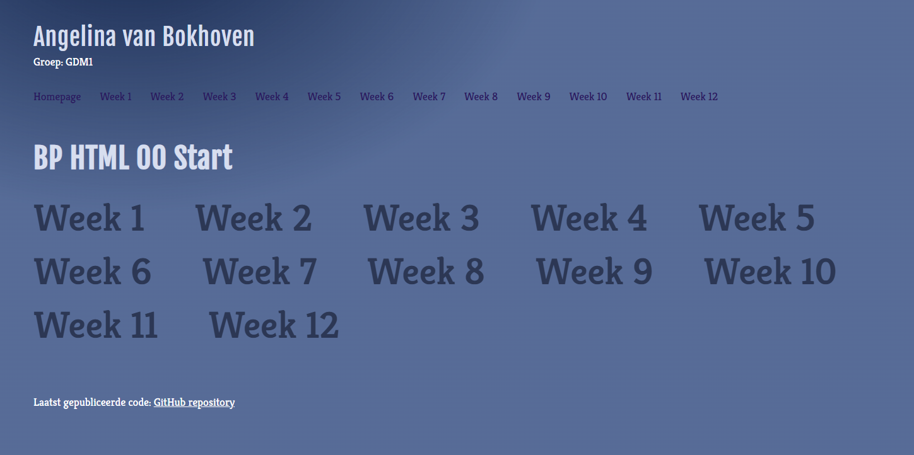

Week 8
In week 8 hebben we het ontwerp verder verfijnd en kleine aanpassingen gedaan aan layout en typografie. We hebben gecontroleerd of alles consistent was over de verschillende pagina’s en waar nodig verbeteringen aangebracht.

Groep: GDM1
In week 8 hebben we het ontwerp verder verfijnd en kleine aanpassingen gedaan aan layout en typografie. We hebben gecontroleerd of alles consistent was over de verschillende pagina’s en waar nodig verbeteringen aangebracht.
